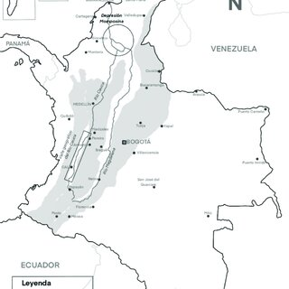

.png)
Curiosidades
Este apartado es para conocer un poco más sobre el país, datos estadístico sobre las ciudades y datos curiosos que podrían interesar:
Por ejemplo: Ciudades más pobladas de Colombia
| Posición | Ciudades | Población |
|---|---|---|
| 1 | Bogotá | 8.380.801 habitantes |
| 2 | Medellín | 2.569.007 habitantes |
| 3 | Cali | 2.569.007 habitantes |
| 4 | Barranquilla | 1.239.804 habitantes |
| 5 | Cartagena de Indias | 1.057.767 habitantes |
Si quieres ver la la lista completa, cliqueando en la siguiente imagen:
Otros datos también pueden ser:
Cosas en lo que Colombia es número 1:
- Aves: Colombia ocupa el primer lugar en número de especies de aves en el mundo con una cifra de 1.815.
- El país de los sapos: Colombia tiene la mayor variedad de anfibios. Se calculan unas 583 especies.
- Bibliotecas: según las estadísticas la Luis Angel Arango es la biblioteca pública más visitada en el mundo. El año pasado fueron a consultarla 2.232.344 personas.
- Animales silvestres: el país cuenta con el mayor número de especies de vertebrados no acuáticos silvestres como los chigüiros y las dantas.
- La palma más alta del mundo: en Colombia crece la palma de cera del Quindío, árbol nacional del país.
- Rosas y claveles: en el territorio nacional se producen la mayor cantidad de claveles y rosas, por lo cual el país es el principal exportador de estas flores.
- Piedras preciosas: Aunque se producen esmeraldas en otros países las colombianas son las de mejor calidad en el mundo por su pureza
- Museos: el del Oro es el más importante del mundo por sus colecciones de objetos precolombinos.
- Endemismos: es el país que registra el mayor número de especies endémicas, es decir que sólo existen acá. Un ejemplo es el caimán llanero.
etc.
Artículos ordenados alfabéticamente